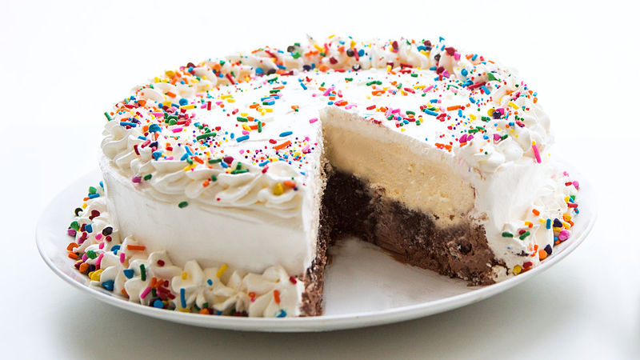

Ice cream-cake (Grande-Tife)

The ice cream-cake is a dish that is categorized as a desert. These delicious, cold, soul-soothing treats date back to the 1880's when it was considered luxury.
It is an amzazing dish that is served with all types of toppings, making one's imagination the only limit.
The ingrdients to making an ice cream-cake, doensn't require that many ingredients. As mentioned above, creativity and personalization is important when deciding what to make.
Many people for instance love making ice cream-cakes with real-life chocholate, while otheres love making them with oreos. They both have similar roles, in that they both bring out that
nice chocholate flavour, but it ultimatly depends on the individual.
I in this case I will demonstrate my grand-mother's favourite ice cream-cake selection, the "Grande-Tife". The ingrdients needed will be;
- 1 tub (1.5 quarts) chocholate ice cream
- 1 package (14.2 oz) Oreo cookies, crushed
- 1 jar (12.8 oz) hot fudge topping
- 1 tub (1.5 quarts) vanilla ice cream
- 24 oz frozen whipped topping, thawed Betty Crocker candy sprinkles and Rainbow Candy Chips
Steps:
- Remove chocolate and vanilla ice cream from freezer; allow to stand at room temperature for 15 minutes.
Meanwhile, in a medium bowl, combine crushed Oreo™ cookies and hot fudge sauce until thoroughly mixed.
- Scoop chocolate ice cream into a 9-inch springform pan lined with parchment paper. Top chocolate ice cream with cookie-fudge mixture and place scoops
of vanilla ice cream on top of the cookie layer.
Spread the ice cream flat and even with a spatula. Return to freezer until firmly frozen, at least 4 hours or overnight for best results.
- Working quickly, remove the cake from the springform pan and transfer to a serving platter.
Frost cake with whipped topping, piping decoration around the edges with an icing bag fitted with a large star tip if desired.
- Return to freezer until firm, about 2 hours. Decorate before slicing and serving.